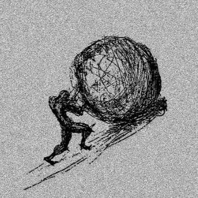

¿Qué significa actuar cuando el resultado parece decidido de antemano?
03Goliat
El tamaño de aquello que tememos.
Antes de que alguien avance, la amenaza ya ha ocupado la imaginación de todos.
Después del combate.
El relato.
En 1 Samuel 17, Goliat sale de las filas filisteas con armadura, armas y un desafío que paraliza a los israelitas. Durante cuarenta días repite su provocación. El miedo es colectivo antes de que el combate sea individual: la presencia del adversario parece decidir lo que todos consideran posible.
Después aparece David. Recuerda su experiencia protegiendo el rebaño y expresa su confianza en Dios. Prueba la armadura de Saúl, pero renuncia a ella porque no está acostumbrado a usarla. Lleva su honda y piedras; hiere a Goliat en la frente y, después, le corta la cabeza con su propia espada.
El desenlace. David vence en este relato. La victoria no convierte toda desventaja, en cualquier circunstancia, en una promesa de triunfo.
UNA LECTURA CONTEMPORÁNEA
El miedo exagera. El riesgo permanece.
Leer el encuentro solo como una victoria de la confianza dejaría fuera la preparación y el modo de actuar. David no se vuelve físicamente equivalente a Goliat. Su estrategia evita aceptar sin examen las condiciones que la amenaza parece imponerle. Nuestra lectura atiende a esa diferencia sin eliminar la dimensión religiosa del texto.
Ante un problema desproporcionado, la presión social puede empujarnos a imitar herramientas que no sabemos utilizar. Discernir implica reconocer capacidades, límites y consecuencias. A veces la respuesta exige acercarse; otras, pedir ayuda, preparar otro camino o reconocer que el costo no es aceptable.
El coraje no necesita negar el miedo para existir. Puede consistir en distinguir lo que sabemos hacer de lo que solo deseamos demostrar. La historia narra una victoria concreta; no ofrece un contrato por el que la valentía siempre será recompensada. Sísifo espera precisamente al otro lado de esa diferencia.
Vencer una vez no resuelve la pregunta por actuar.
El desenlace pertenece al relato. La decisión de actuar se toma antes de conocerlo. Juzgar cada elección únicamente por su recompensa confunde el discernimiento con la suerte del resultado.
Fuentes y obra
1 Samuel 17. Se conserva el papel de la confianza religiosa de David y el desenlace violento del relato; la lectura estratégica es una interpretación editorial.
Sobre la imagen. Recurso heredado del proyecto. La escena muestra el desenlace, no la aparición de Goliat antes del combate. Atribución de la reproducción pendiente.
¿Qué significado conserva el esfuerzo cuando no hay un gigante que caiga para siempre?
Una piedra derriba al gigante. Otra vuelve a caer.
La victoria posible no explica todavía el esfuerzo que nunca alcanza una conclusión.
04Sísifo
Y mañana, la misma piedra.
El esfuerzo vuelve al punto de partida. La pregunta también.

El esfuerzo y el regreso.
El relato.
En el canto XI de la Odisea, Odiseo contempla a Sísifo entre los muertos. Lo ve empujar una enorme roca hacia lo alto; cuando está a punto de superar la cima, la piedra vuelve a rodar. Sísifo desciende y comienza de nuevo. El pasaje muestra el castigo sin ofrecer una liberación final.
Muchos siglos después, Albert Camus toma esa figura en El mito de Sísifo, publicado en 1942. El ensayo no añade un capítulo al mito antiguo: propone una lectura del absurdo, de la conciencia de la propia condición y de la posibilidad de vivir sin una respuesta última garantizada.
El desenlace. La roca sigue cayendo. La lectura de Camus no debe confundirse con un final antiguo en el que los dioses levantan la condena.
UNA LECTURA CONTEMPORÁNEA
La repetición no decide por nosotros su sentido.
La contradicción con David importa: el valor de una acción no siempre se hace visible en una victoria definitiva. Cuidar, aprender o mantener algo vivo suele exigir volver. Esa repetición puede tener sentido sin producir un cierre espectacular. Pero no toda repetición merece conservarse.
Aquí nuestra lectura se separa de una consigna de resistencia ilimitada. Cuando una tarea nos desgasta, conviene preguntar qué sostiene, a quién beneficia y si sus condiciones pueden cambiar. Persistir, modificar una estrategia o abandonar un objetivo no son decisiones intercambiables; ninguna puede juzgarse solo desde fuera.
El absurdo de Camus no equivale simplemente a aburrimiento cotidiano ni a una obligación de estar felices. El ensayo mantiene la tensión entre nuestra búsqueda de claridad y un mundo que no la satisface plenamente. Esta página recoge esa tensión sin convertirla en una receta: actuar puede seguir siendo una elección, aunque no sea una garantía de recompensa.
La piedra no cambia. ¿Debe permanecer igual nuestra respuesta?
La lucidez no vuelve ligera la roca. Permite examinar la relación que mantenemos con ella. Reconocer un límite no demuestra falta de carácter; puede revelar que la voluntad necesita dirección, condiciones y una medida.
Fuentes y obra
Homero, Odisea XI, 593–600. Albert Camus, El mito de Sísifo (1942), se presenta como interpretación posterior, sin citas extensas. Referencia crítica: Stanford Encyclopedia of Philosophy.